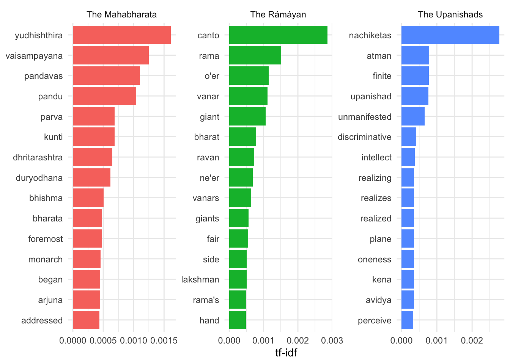
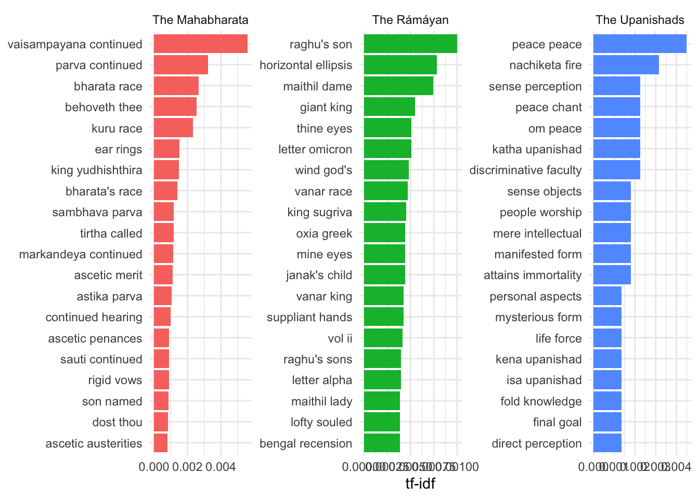

hindu_texts <- read_csv("data/gutenberg_hindu.csv")Multi-word phrases
We once again begins with reading in the libraries we’ll need.
Loading the libraries we need
Read in the text
We’ll compare the Svacchanda-Tantra, the netratantra, and the hathapradipika.
Load texts
For this, we’ll use three different texts.
I’ve downloaded from the Gutenberg project, English translations of the mahabharata, the ramayan, and the upanishads. Let’s read them in:
Let’s have a look:
hindu_texts# A tibble: 128,526 × 4
gutenberg_id text title short_title
<dbl> <chr> <chr> <chr>
1 3283 The Upanishads The Upanishads The Upanishads
2 3283 <NA> The Upanishads The Upanishads
3 3283 Translated and Commentated The Upanishads The Upanishads
4 3283 <NA> The Upanishads The Upanishads
5 3283 by The Upanishads The Upanishads
6 3283 <NA> The Upanishads The Upanishads
7 3283 Swami Paramananda The Upanishads The Upanishads
8 3283 <NA> The Upanishads The Upanishads
9 3283 <NA> The Upanishads The Upanishads
10 3283 From the Original Sanskrit Text The Upanishads The Upanishads
# ℹ 128,516 more rowsSo we’ve got English translations here of the mahabharata, the ramayan, and the upanishads. Each of them are read in line by line - the upanishads are short (2,611 lines) compared to the others.
We can split them up into single words using the function unnest_tokens and count how many times each word is used in each text.
hindu_texts_word_counts <- hindu_texts %>%
unnest_tokens(word, text) %>%
count(short_title, word, sort = TRUE)These are just the raw counts, but the texts aren’t equally long.
Let’s add term frequencies, i.e., the number of times a word occurs divided by the number of words in a text, as well as tf-idf, using the bind_tf_idf function, and sort by the term frequencies
hindu_texts_tf_idf <- hindu_texts_word_counts %>%
bind_tf_idf(word, short_title, n) %>%
arrange(desc(tf))
hindu_texts_tf_idf# A tibble: 38,721 × 6
short_title word n tf idf tf_idf
<chr> <chr> <int> <dbl> <dbl> <dbl>
1 The Upanishads the 1471 0.0791 0 0
2 The Mahabharata the 45191 0.0704 0 0
3 The Rámáyan the 25807 0.0628 0 0
4 The Mahabharata of 32771 0.0510 0 0
5 The Mahabharata and 30825 0.0480 0 0
6 The Rámáyan and 17288 0.0421 0 0
7 The Upanishads <NA> 782 0.0421 NA NA
8 The Upanishads of 658 0.0354 0 0
9 The Upanishads and 546 0.0294 0 0
10 The Upanishads is 500 0.0269 0 0
# ℹ 38,711 more rowsLet’s now calculate and plot tf-idf.
hindu_texts_tf_idf %>%
mutate(word = fct_reorder(word, tf_idf)) %>%
group_by(short_title) %>%
top_n(15, tf_idf) %>%
ungroup() %>%
mutate(word = reorder(word, tf_idf)) %>%
ggplot(aes(word, tf_idf, fill = short_title)) +
geom_col(show.legend = FALSE) +
labs(x = NULL, y = "tf-idf") +
facet_wrap(~short_title, scales = "free") +
coord_flip() +
theme_minimal()
ggsave("tf_idf_hindu_texts_gutenberg.png", width = 9, height = 5)Very interesting!
Bigrams
hindu_texts_bigrams <- hindu_texts %>%
unnest_tokens(bigram, text, token = "ngrams", n = 2)
hindu_texts_bigrams# A tibble: 956,209 × 4
gutenberg_id title short_title bigram
<dbl> <chr> <chr> <chr>
1 3283 The Upanishads The Upanishads the upanishads
2 3283 The Upanishads The Upanishads <NA>
3 3283 The Upanishads The Upanishads translated and
4 3283 The Upanishads The Upanishads and commentated
5 3283 The Upanishads The Upanishads <NA>
6 3283 The Upanishads The Upanishads <NA>
7 3283 The Upanishads The Upanishads <NA>
8 3283 The Upanishads The Upanishads swami paramananda
9 3283 The Upanishads The Upanishads <NA>
10 3283 The Upanishads The Upanishads <NA>
# ℹ 956,199 more rowslet’s count and filter them
bigrams_separated <- hindu_texts_bigrams %>%
separate(bigram, c("word1", "word2"), sep = " ")
bigrams_filtered <- bigrams_separated %>%
filter(!word1 %in% stop_words$word) %>%
filter(!word2 %in% stop_words$word)
bigram_counts <- bigrams_filtered %>%
count(word1, word2, sort = TRUE)
bigram_counts# A tibble: 96,646 × 3
word1 word2 n
<chr> <chr> <int>
1 <NA> <NA> 13426
2 thou art 757
3 thou hast 552
4 vaisampayana continued 375
5 parva continued 218
6 raghu's son 200
7 thou wilt 193
8 dost thou 184
9 bharata race 179
10 art thou 173
# ℹ 96,636 more rowsbigrams_united <- bigrams_filtered %>%
unite(bigram, word1, word2, sep = " ")
bigrams_united# A tibble: 156,110 × 4
gutenberg_id title short_title bigram
<dbl> <chr> <chr> <chr>
1 3283 The Upanishads The Upanishads NA NA
2 3283 The Upanishads The Upanishads NA NA
3 3283 The Upanishads The Upanishads NA NA
4 3283 The Upanishads The Upanishads NA NA
5 3283 The Upanishads The Upanishads swami paramananda
6 3283 The Upanishads The Upanishads NA NA
7 3283 The Upanishads The Upanishads NA NA
8 3283 The Upanishads The Upanishads original sanskrit
9 3283 The Upanishads The Upanishads sanskrit text
10 3283 The Upanishads The Upanishads NA NA
# ℹ 156,100 more rowsbigram_tf_idf <- bigrams_united %>%
count(short_title, bigram) %>%
bind_tf_idf(bigram, short_title, n) %>%
arrange(desc(tf_idf))
bigram_tf_idf# A tibble: 98,891 × 6
short_title bigram n tf idf tf_idf
<chr> <chr> <int> <dbl> <dbl> <dbl>
1 The Mahabharata vaisampayana continued 375 0.00508 1.10 0.00558
2 The Upanishads peace peace 10 0.00409 1.10 0.00450
3 The Mahabharata parva continued 218 0.00295 1.10 0.00324
4 The Upanishads nachiketa fire 7 0.00286 1.10 0.00315
5 The Mahabharata bharata race 179 0.00242 1.10 0.00266
6 The Mahabharata behoveth thee 170 0.00230 1.10 0.00253
7 The Mahabharata kuru race 156 0.00211 1.10 0.00232
8 The Upanishads discriminative faculty 5 0.00205 1.10 0.00225
9 The Upanishads katha upanishad 5 0.00205 1.10 0.00225
10 The Upanishads om peace 5 0.00205 1.10 0.00225
# ℹ 98,881 more rowslong_data <- bigram_tf_idf %>%
mutate(bigram = fct_reorder(bigram, tf_idf))
long_data %>%
group_by(short_title) %>%
arrange(desc(tf_idf)) %>%
slice(1:20) %>%
ungroup() %>%
mutate(word = reorder(bigram, tf_idf)) %>%
ggplot(aes(reorder(bigram, tf_idf), tf_idf, fill = short_title)) +
geom_col(show.legend = FALSE) +
labs(x = NULL, y = "tf-idf") +
facet_wrap(~short_title, scales = "free") +
coord_flip() +
theme_minimal()